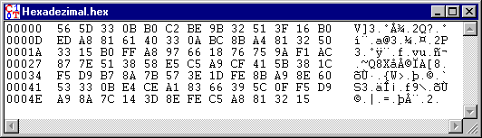

Mit diesem Fenstertyp werden Dokumente in Hexadezimaldarstellung angezeigt. Dokumente können auch leer sein.
Die Bearbeitungsmöglichkeiten (siehe Menü Bearbeiten) erlauben, Zeichen zu überschreiben, zu entfernen und einzufügen.
Das Fenster für hexadezimale Ein-/Ausgaben ist wie folgt aufgebaut:
In der ersten Spalte befindet sich eine fortlaufende hexadezimale Nummerierung der Position der in den anderen beiden Spalten angezeigten Zeichen.
In der zweiten Spalte werden die Zeichen hexadezimal (siehe ASCII-Tabelle) dargestellt. Ein Zeichen wird durch zwei aufeinanderfolgende Zeichen (0, 1, ..., 9, A, B, ..., F) dargestellt.
In der dritten Spalte werden die darstellbaren Zeichen gemäß ihrem ASCII-Code angezeigt. Nicht-anzeigbare Zeichen werden durch einen Punkt dargestellt.
Wenn der hexadezimale Wert eines Zeichens geändert wird, erfolgt eine Anpassung der Darstellung des ASCII-Zeichens und umgekehrt.
Markiert man Hex-Werte in der Mitte, werden die entsprechenden ASCII-Werte rechts auch markiert (und umgekehrt).

Dokumente ohne Sonderzeichen werden normalerweise in einem Fenster für Text Ein-/Ausgaben angezeigt.
Die Darstellung in einem Fenster für Text-Ein-/Ausgaben
kann durch den Menüeintrag Ansicht \
Als Text anzeigen erzwungen werden.
Beachte: Dies bewirkt, dass alle Zeichen nach dem ersten ASCII-Zeichen 'NULL' (=
Text-Formatzeichen für das Dateiende) verloren gehen, sofern die Datei als Textdatei gespeichert wird. Die ASCII-Null wird als 'NUL' angezeigt.
Bemerkung 1:
Die Zahlenwerte (dezimal und hexadezimal) der verschiedenen ASCII-Zeichen
finden Sie in der ASCII-Tabelle.
Bemerkung 2:
Um Zeichen mit Steuerung-V (Einfügen) zu überschreiben, müssen diese vorher
markiert werden.